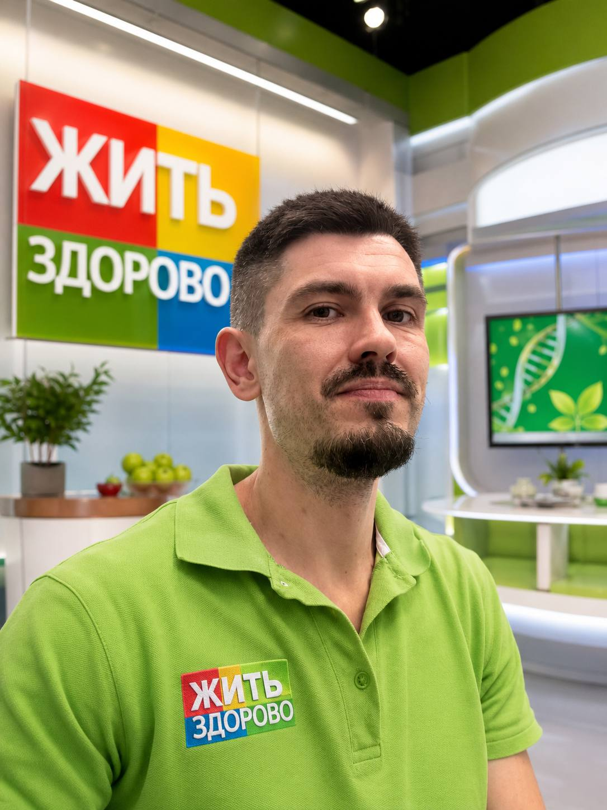

Сутки терпел и накручивал себя. В приёмном на меня даже бровью не повели — достали за двадцать минут. Самым страшным оказался только звонок.
М
Мужчина, 29 летсобирательная история
Один спокойный шаг — и ты знаешь, что делать. Поможем сориентироваться, снять панику и быстро добраться до помощи. Без осуждения и лишних глаз.

🤝 Илья · старший по спокойствиюЕсли есть хотя бы один из этих признаков — не геройствуй и не жди утра. Звони в скорую. Это бесплатно, и тебя за это не осудят и не «сдадут».
103 — скорая, 112 — единый номер с любого телефона, даже без денег и SIM. Скажи как есть: диспетчер слышал всё, его задача — помочь, а не осудить.
⚠️ Не пытайся достать сам и не проталкивай глубже. Так легко повредить стенку органа и получить кровотечение. Промедление опаснее стыда.
Спойлер: ты не удивишь вообще никого. Прямо сейчас, пока ты это читаешь, кто-то на планете засовывает что-нибудь не туда — и не у всех получается достать обратно. Таких историй миллионы. Это не извращение и не глупость, а просто часть человеческой природы. Стыдиться тут нечего.
📦 Список бесконечен, и в нём нет ничего, что заставило бы врача поднять бровь. Но достаёт всё это врач, а не ты подручными средствами — пассатижи, ложка и «ещё пара попыток» делают только хуже.
Какой бы предмет это ни был и как бы глубоко он ни оказался — врачи доставали и не такое. Чаще всего это быстро, под обезболиванием и без всяких последствий. Самое сложное — решиться обратиться. Дальше уже работают профессионалы.
Ты не один такой сегодня — и точно не один такой в эту минуту. Ты в очень, очень большой компании. А реальных случаев ещё больше: многие молчат из стыда. Именно поэтому мы и сделали этот сайт.
Инородные тела — одна из частых причин обращений в приёмные отделения по всему миру. Пока ты на этой странице, где-то уже набирают номер. Стыд у каждого свой, а ситуация — общая.
Наглядно видно, как часто такое случается в мире — это иллюстрация, а не лента реальных заявок. Но за каждой подобной ситуацией стоит живой человек, которому смогли помочь.
Если жизни ничего не угрожает (см. красный блок выше), всё решаемо. Без гонки, но и без «само рассосётся».
Не доставай сам и не пихай глубже, пытаясь «исправить». Большинство предметов безопасно извлекает только врач — спокойно и с обезболиванием.
Загляни в красный блок выше. Есть хоть один — звони 103 или 112. Нет ни одного — всё равно к врачу, но уже без спешки.
Приёмное отделение больницы, хирург или проктолог. Для них это рутина, а не сенсация. Честно скажи что и как — это ускорит помощь и снизит риск.
Тебя вылечат и отпустят домой. Через неделю это будет просто странная история, которую ты, может, даже расскажешь друзьям. А может, и нет.
Стыд заставляет людей тянуть часами и сутками. Именно из-за этого простая ситуация превращается в операцию. Вот почему бояться разговора не стоит.
В любой крупной больнице такие случаи бывают регулярно. Ты не удивишь дежурного хирурга — честное слово, у него были истории и поинтереснее.
По статье 13 ФЗ-323 врач не имеет права рассказывать, с чем ты обратился. Ни родственникам, ни на работу, ни кому-либо ещё.
Инородное тело — это медицина, а не уголовное дело. Полиция тут ни при чём. Задача врача — вылечить, а не читать нотации.
Разрыв, инфекция и непроходимость развиваются за часы. Неловкий разговор длится пять минут. Математика простая.
Почти все, кто решился, потом говорят одно и то же: «зря так долго тянул». Вот типичные истории — чтобы ты увидел, чем это обычно заканчивается.
Сутки терпел и накручивал себя. В приёмном на меня даже бровью не повели — достали за двадцать минут. Самым страшным оказался только звонок.
Думала, сгорю со стыда. Написала анонимно ночью, мне спокойно объяснили, что делать и куда ехать. К утру всё было позади, и я наконец выдохнула.
Главное, что я понял: врачу реально всё равно, как оно туда попало. Ему важно тебя починить. Я зря потерял полдня на панику.
Истории собирательные — они основаны на типичных ситуациях, а не на конкретных людях. Настоящие отзывы появятся здесь, когда участники группы поделятся ими сами: анонимно и только по своему желанию.
Врачей часто боятся, потому что кажется — осудят. Тут наоборот: тебя встречает Илья, и вся его задача в том, чтобы ты выдохнул и понял, что делать.
Илья здесь главный. Не врач в халате, а свой человек: спокойно поможет разобраться, подскажет, к кому и куда идти, и быстро сориентирует. Никаких лекций, ухмылок и «ну как вас угораздило» — только дело и поддержка.
Ему можно написать о чём угодно. Это останется между вами.
✍️ Написать ИльеСтыд проходит за день. Осложнения — нет. Сделай первый шаг прямо сейчас: напиши в анонимную группу, а если есть тревожные признаки — сразу звони в скорую.
Анонимная группа поддержки для тех, кто попал в неловкую и тревожную ситуацию — и кому важно, чтобы рядом оказались живые люди, а не осуждение и скриншоты.
Правила простые: уважение, анонимность, ноль осуждения. Медицинский диагноз ставит только врач — группа помогает до него дойти, а не заменяет его.
Оставь контакт — пришлём приглашение в закрытый чат. Можно с псевдонимом, настоящее имя не нужно.
🔒 Мы не публикуем твои данные. Это закрытая группа.
✈️ Или сразу загляни в Telegram-чат →Нет. Для врача это рабочая ситуация, а не повод для шуток. А группа поддержки прямо построена на правиле «без осуждения» — за хейт там сразу убирают.
Врач связан врачебной тайной по закону (ФЗ-323, ст. 13) и не имеет права никому рассказывать. В группе ты можешь быть под ником — настоящее имя не требуется.
Скорая по ОМС бесплатна, помощь окажут даже без полиса при угрозе жизни. Инородное тело — это медицина, а не преступление, полиции тут делать нечего.
Нет. Это самый частый способ сделать хуже: повредить слизистую или стенку и получить кровотечение. Пусть достаёт врач — у него для этого есть инструменты и обезболивание.
Начни с малого: напиши в группу анонимно или позвони 103 и скажи как есть. Один звонок снимает большую часть паники, а дальше уже не так страшно.
Чем меньше, тем лучше. Если есть тревожные признаки из красного блока — нисколько, звони сразу. Если их нет — всё равно сегодня к врачу, а не «посмотрю до завтра».